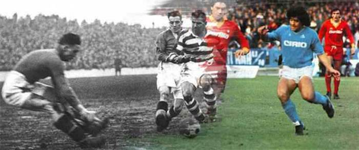

Football
Info About Football
football, game in which two teams of 11 players, using any part of their bodies except their hands and arms, try to maneuver the ball into the opposing team's goal. Only the goalkeeper is permitted to handle the ball and may do so only within the penalty area surrounding the goal. The team that scores more goals wins
There are a number of references to traditional, ancient, or prehistoric ball games played in many different parts of the world.

Football History
The first known examples of a team game involving a ball, which was made out of a rock, occurred in old Mesoamerican cultures for over 3,000 years ago. It was by the Aztecs called Tchatali, although various versions of the game were spread over large regions. In some ritual occasions, the ball would symbolize the sun and the captain of the losing team would be sacrificed to the gods.
Modern football originated in Britain in the 19th century. Since before medieval times, “folk football” games had been played in towns and villages according to local customs and with a minimum of rules.

LA MASIA Academy
In the world there is lots of academys of football,where kids grown as a football stars.I f you want to join on of the best academy in LA MASIA clikh here